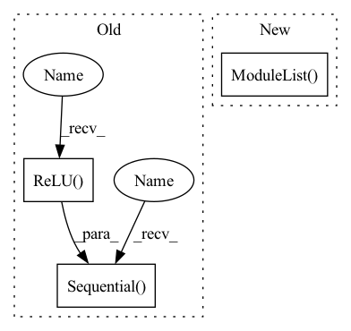

Pattern ID :1017
Before Change
nn.BatchNorm2d(oup),
)
self.conv2 = nn.Sequential(
// pw
nn.Conv2d(oup, hidden_dim, 1, 1, 0, bias=False),
nn.BatchNorm2d(hidden_dim),
nn.ReLU(inplace=False),
// dw
nn.Conv2d(hidden_dim, hidden_dim, 3, 1, 1, groups=hidden_dim, bias=False),
nn.BatchNorm2d(hidden_dim),
nn.ReLU(inplace=False) ,
// pw-linear
nn.Conv2d(hidden_dim, oup, 1, 1, 0, bias=False),
nn.BatchNorm2d(oup),
)
def forward(self, x):
x = self.conv1(x)
After Change
nn.BatchNorm2d(oup),
)
self.conv2 = torch.nn.ModuleList()
for i in range(n):
self.conv2.append(IRBlock(oup, hidden_dim))
In pattern: SUPERPATTERN
Frequency: 4
Non-data size: 3
Instances Fragment ID: 3208544
Project Name: fire717/movenet.pytorch
Commit Name: 6eb59cd47bfde753530ed236335910bed9ba7c1d
Time: 2022-08-12
Author: fire15@126.com
File Name: lib/models/movenet_mobilenetv2.py
M Class Name: InvertedResidual
N Class Name: InvertedResidual
M Method Name: __init__(6)
N Method Name: __init__(6)
M Parent Class: nn.Module
N Parent Class: nn.Module
M File Name: lib/models/movenet_mobilenetv2.py
N File Name: lib/models/movenet_mobilenetv2.py
M Start Line: 83
M End Line: 113
N Start Line: 98
N End Line: 120
Before Change
self.cat_embedding.append(
nn.Embedding(cat, embed_dim)
)
self.fc = nn.Sequential( nn.Linear(out_features=embed_dim, in_features=1),
nn.ReLU()
)
self.num_embedding = clones(self.fc, no_num)
self.no_num = no_num
self.no_cat = no_catAfter Change
CategoricalEmbedding(cat, embed_dim)
)
self.num_embedding = nn.ModuleList()
for i in range(no_num):
self.num_embedding.append(
NumericalEmbedding(embed_dim)
) Fragment ID: 3208536
Project Name: ogunlao/saint
Commit Name: 35f005449ee9712d4ca6e12208a2948b803307a3
Time: 2021-06-18
Author: ogunlao@yahoo.com
File Name: models/embedding.py
M Class Name: Embedding
N Class Name: Embedding
M Method Name: __init__(5)
N Method Name: __init__(5)
M Parent Class: nn.Module
N Parent Class: nn.Module
M File Name: models/embedding.py
N File Name: models/embedding.py
M Start Line: 54
M End Line: 59
N Start Line: 71
N End Line: 77
Before Change
self.input_feat_len = input_feat_len
self.net = nn.Sequential(
nn.Linear(self.input_feat_len, self.input_feat_len*3),
nn.ReLU(),
nn.Linear(self.input_feat_len*3, self.input_feat_len*3),
nn.ReLU() ,
nn.Linear(self.input_feat_len*3, self.input_feat_len),
nn.ReLU(),
nn.Linear(self.input_feat_len, 1)
)
def forward(self, x: torch.Tensor) -> torch.Tensor:
return self.net(x)After Change
self.num_layers = num_layers
self.width = width
self.linears = nn.ModuleList( [nn.Linear(self.input_feat_len, width)])
self.linears.extend([nn.Linear(width, width) for i in range(1, self.num_layers-1)])
self.output = nn.Linear(width, 1)
def forward(self, x: torch.Tensor) -> torch.Tensor: Fragment ID: 3208537
Project Name: microsoft/archai
Commit Name: de9f58e7d18749d3dc65f6edada0285fb264dd04
Time: 2022-12-16
Author: dedey@microsoft.com
File Name: archai/nas/predictive_dnn_ensemble.py
M Class Name: FFEnsembleMember
N Class Name: FFEnsembleMember
M Method Name: __init__(4)
N Method Name: __init__(2)
M Parent Class: nn.Module
N Parent Class: nn.Module
M File Name: archai/nas/predictive_dnn_ensemble.py
N File Name: archai/nas/predictive_dnn_ensemble.py
M Start Line: 90
M End Line: 103
N Start Line: 97
N End Line: 106
Before Change
nn.BatchNorm2d(oup),
)
self.conv2 = nn.Sequential(
// pw
nn.Conv2d(oup, hidden_dim, 1, 1, 0, bias=False),
nn.BatchNorm2d(hidden_dim),
nn.ReLU(inplace=False) ,
// dw
nn.Conv2d(hidden_dim, hidden_dim, 3, 1, 1, groups=hidden_dim, bias=False),
nn.BatchNorm2d(hidden_dim),
nn.ReLU(inplace=False),
// pw-linear
nn.Conv2d(hidden_dim, oup, 1, 1, 0, bias=False),
nn.BatchNorm2d(oup),
)
def forward(self, x):
x = self.conv1(x)
After Change
nn.BatchNorm2d(oup),
)
self.conv2 = torch.nn.ModuleList()
for i in range(n):
self.conv2.append(IRBlock(oup, hidden_dim))
Fragment ID: 3208538
Project Name: fire717/movenet.pytorch
Commit Name: 6eb59cd47bfde753530ed236335910bed9ba7c1d
Time: 2022-08-12
Author: fire15@126.com
File Name: lib/models/movenet_mobilenetv2.py
M Class Name: InvertedResidual
N Class Name: InvertedResidual
M Method Name: __init__(6)
N Method Name: __init__(6)
M Parent Class: nn.Module
N Parent Class: nn.Module
M File Name: lib/models/movenet_mobilenetv2.py
N File Name: lib/models/movenet_mobilenetv2.py
M Start Line: 83
M End Line: 113
N Start Line: 98
N End Line: 120
Before Change
class conv_block(nn.Module):
def __init__(self,ch_in,ch_out):
super(conv_block,self).__init__()
self.conv = nn.Sequential(
nn.Conv2d(ch_in, ch_out, kernel_size=3,stride=1,padding=1,bias=True),
nn.BatchNorm2d(ch_out),
nn.ReLU(inplace=True),
nn.Conv2d(ch_out, ch_out, kernel_size=3,stride=1,padding=1,bias=True),
nn.BatchNorm2d(ch_out),
nn.ReLU(inplace=True)
)
def forward(self,x):
x = self.conv(x)After Change
nn.Upsample(scale_factor=2),
nn.Conv2d(in_channels, out_channels, 3, 1, 1)
)
self.resblocks = nn.ModuleList( [ResNetBlock(in_channels, num_groups, skip_connection_scale, swish, skip_path=skip_path) for i in range(numResNetBlocks)])
def forward(self, x):
for resblock in self.resblocks:
x = resblock(x) Fragment ID: 3208540
Project Name: atharvbhat/plus-ultra
Commit Name: 03d62302ad59610a32dfa219ac961dd52def9352
Time: 2022-05-30
Author: bhat.atharv@gmail.com
File Name: model.py
M Class Name: conv_block
N Class Name: UBlock
M Method Name: __init__(8)
N Method Name: __init__(3)
M Parent Class: nn.Module
N Parent Class: nn.Module
M File Name: model.py
N File Name: model.py
M Start Line: 32
M End Line: 41
N Start Line: 61
N End Line: 67